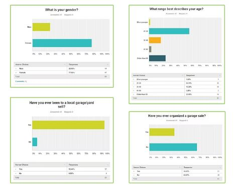
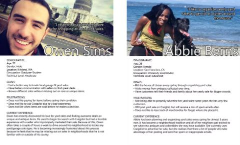
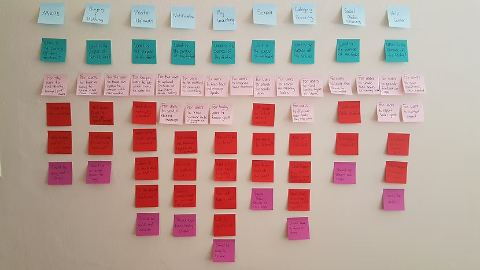
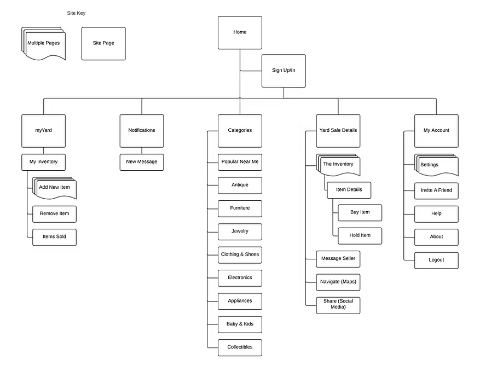
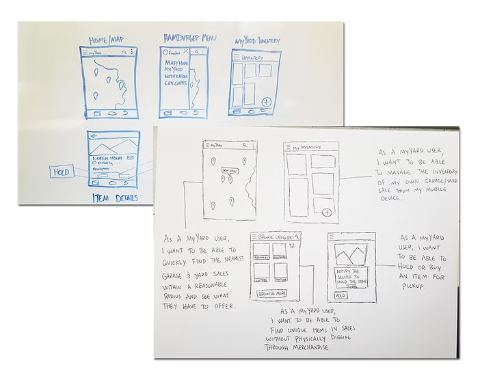
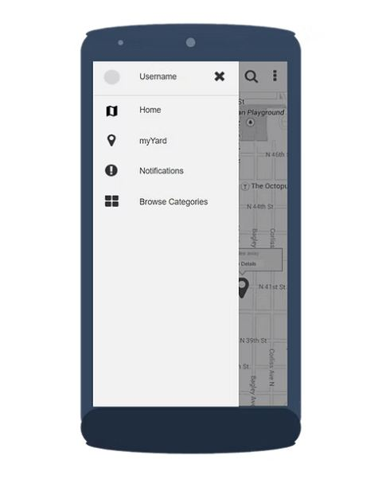
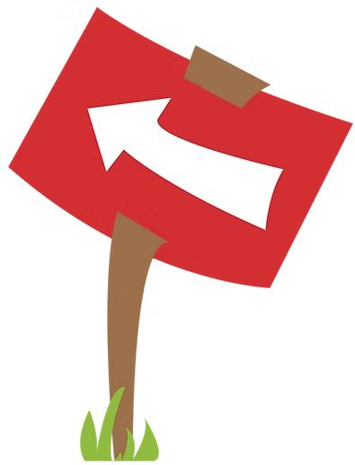
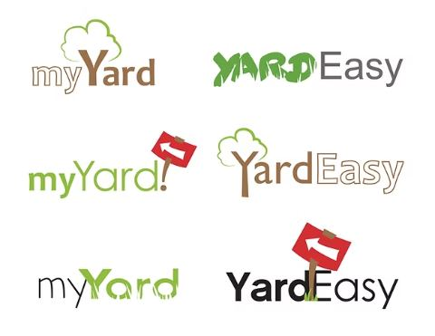
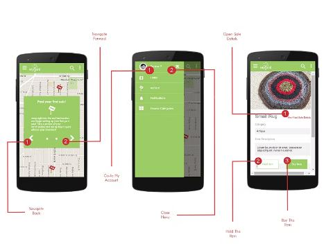
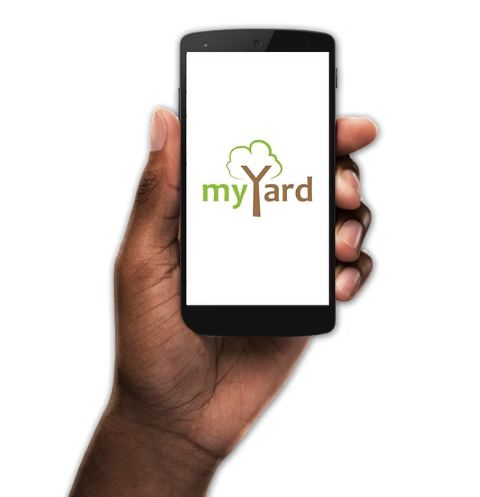

myYard
myYard is a simple way to organize and monitor yard sales while giving customers a quick way to find them. It uses a mobile device’s location to surface nearby yard sales, and lets shoppers browse a sale’s inventory right from home.
- Team
- 1 designer
- Role
- Designer
- Year
- 2015
“How might we provide a way to quickly find local garage/yard sales and provide a fluid management system of merchandise & goods?”
Research
myYard was a solo project to test a lean UX approach within a 4-day time constraint. I already knew the problem space, so I started with an online survey and closed it after about 60 responses in the first day, then moved into competitive analysis and segmentation. The survey clarified my two user groups — yard sale organizers and attendees — with detailed qualitative feedback that directly shaped my personas. From there, a competitive analysis produced a core feature list, and a design-mapping exercise connected each feature back to what my personas actually needed.


Design implementation
With limited time, I focused most effort on prototyping — roughly 4–5 hours whiteboarding and sketching to rough out the interface, using my personas to justify design decisions while keeping the design scalable. I landed on a geo-mapping home screen highlighting local yard sales, since survey respondents said they rarely traveled far for a sale and cared most about what was nearby.



Branding mattered too: I chose earth tones for approachability with yard-sale enthusiasts and designed a logo built around a yard-sale “arrow” sign, since signage was the top way people said they found nearby sales. It was my first time working in Google’s Material Design system, so I followed its color and component guidelines closely while still working to set the design apart from competitors.



Results
The design came out clean, functional, and aligned with user goals in usability testing with yard-sale enthusiasts. That testing surfaced future directions, including integrating Craigslist ads (which most users were already relying on) and adding item delivery — positioning myYard as a genuine e-commerce layer on top of yard sales.


“No more fumbling with inventory lists or forgetting prices of your goods, because everything is right where you need it to be.”